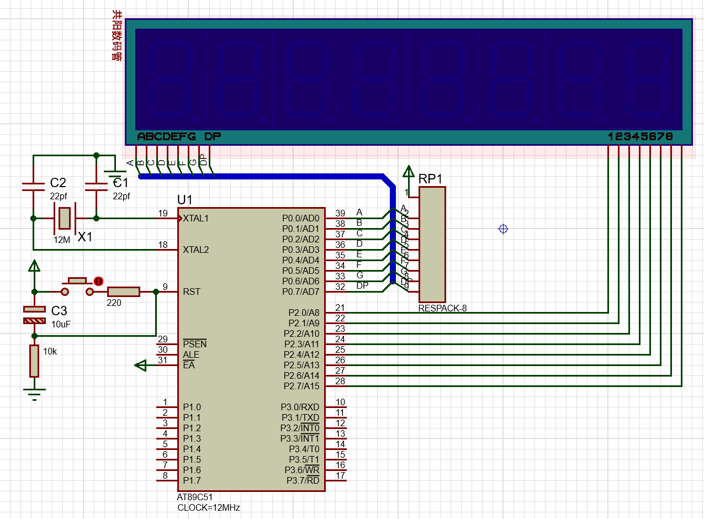
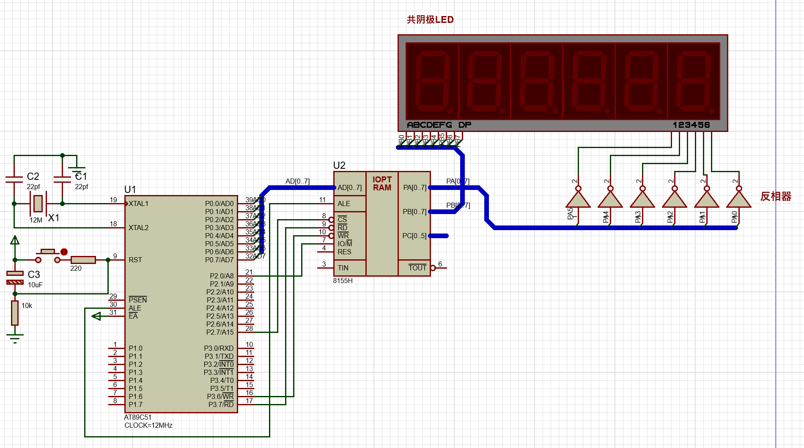
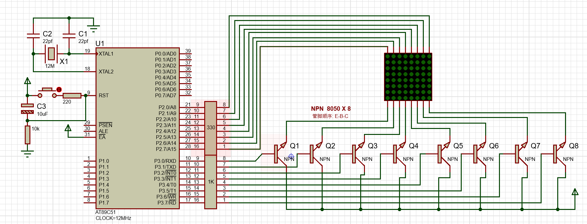
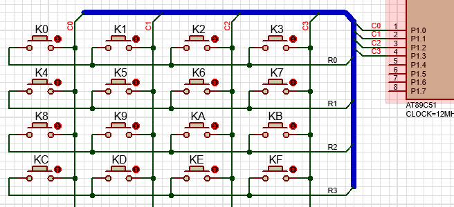
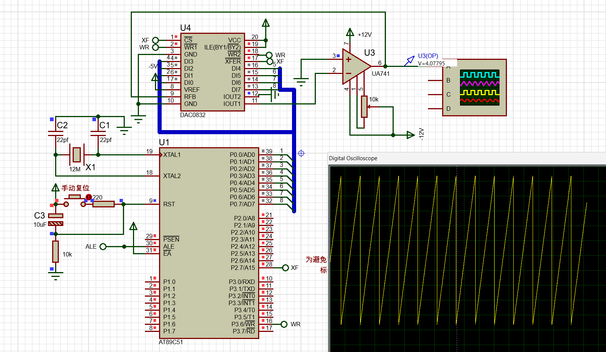

void delay_ms(INT16U x)
{
INT8U t; while(x--) for(t = 0; t < 120; t++);
}
uchar keybd()
{
P1=0xFF;
if(~P1)
{
i=(~P1)&0x3F;
delay_ms(10); //去抖动
if(((~P1)&0x3F)==i)
switch(i){
case 0x01:i=0;
while(~P1); //等待键释放，下同
break;
case 0x02:i=0;while(~P1);break;
case 0x04:i=1;while(~P1);break;
case 0x08:i=2;while(~P1);break;
case 0x10:i=3;while(~P1);break;
case 0x20:i=4;while(~P1);break;
case 0x40:i=5;while(~P1);break;
}
}
return i;
}
//在IIC上产生起始信号
void Start()
{
SDA=1;
SCL=1;
NOP4(); //执行四次NOP（空操作），延时，下同
SDA=0;
NOP4();
SCL=0;
}
//在IIC上产生停止信号
void Stop()
{
SDA=0;
SCL=0;
NOP4();
SCL=1;
NOP4();
SDA=1;
}
//读取应答
void RACK()
{
SDA=1;
NOP4();
SCL=1;
NOP4();
SCL=0;
}
//发送非应答信号
void NO_ACK()
{
SDA=1;
SCL=1;
NOP4();
SCL=0;
SDA=0;
}
XBYTE 是Keil C51编译器提供的扩展关键字，属于absacc.h头文件中的宏，用于直接访问8051的外部数据存储器空间（XDATA）。其底层实现为：
#define XBYTE ((unsigned char volatile xdata *) 0)
作用：将外部存储器的16位地址映射为指针，通过数组形式访问
寻址范围：0x0000~0xFFFF（共64KB）
//共阳数码管0~9的数字段码表
code INT8U SEG_CODE[] = {0xC0,0xF9,0xA4,0xB0,0x99,0x92,0x82,0xF8,0x80,0x90};
动态扫描原理图：

MAIN:
MOV 70H, #02H ;将单片机RAM地址70H - 77H设置为缓存单元，填入显示的内容，比如20200312
MOV 71H, #00H
MOV 72H, #02H
MOV 73H, #00H
MOV 74H, #00H
MOV 75H, #03H
MOV 76H, #01H
MOV 77H, #02H
AGAIN:ACALL DISP1 ;
SJMP AGAIN ;主程序末尾应跳转至再次刷新显示或原地等待
;----------------------------------------显示子程序------------
DISP1:MOV R0, #77H ;R0作显示缓存区的指针，初始指向77H单元，初始选中最右LED
MOV R2, #10000000B ;R2存放位选码，初始选中KED最右位
LOOP:MOV A, #00H
MOV P2, A ;先关闭所有位
MOV A, @R0
MOV DPTR, #PTRN
MOVC A, @A+DPTR ;查段选码PTRN，将显示缓存单元的数字代码转换为对应的段选码
MOV P0, A ;输出段选码
MOV P2, R2 ;
CALL D1MS
DEC R0
MOV A, R2
CLR C
RRC A
JC PASS ;判断是否8位都已经显示完毕，是就转到PASS
MOV R2, A ;还没显示完，就继续循环
AJMP LOOP
PASS: MOV A, #00H
MOV P2, A ;退出子程序前，关闭所有位
RET
;----------------延时1ms子程序--------------------------
D1MS:MOV R7, #02H
DMS:MOV R6, #0FFH
DJNZ R6, $
DJNZ R7, DMS
RET
;----------------共阳极段码表---------------------------
PTRN:DB 0C0H, 0F9H, 0A4H, 0B0H, 99H
DB 92H, 82H, 0F8H, 80H, 90H
;----------------共阴级段码表---------------------------
PTRNC:DB 3FH, 06H, 5BH, 4FH, 66H
DB 6DH, 7DH, 07H, 7FH, 6FH
END
void main()
{
INT8U i;
array[3]=1;
while (1)
{
for ( i=0; i<8; i++ ) //扫描显示8位数码管
{ P0= 0xff; //段码口输出全1，即先关闭
P2=1 << i; //输出位选码 00000001 00000010 00000100 .... 10000000
P0=SEG_CODE[array[i]]; //输出段选码
delay_ms(4);
}
}
}
原理图如下：

#include<reg52.h>
#include<absacc.h>
#include <intrins.h>
#define uchar unsigned char
#define uint unsigned int
#define dula_data XBYTE[0x7f02] //8155 PB口地址
#define wela_data XBYTE[0x7f01] //8155 PA口地址
#define dispcom XBYTE[0x7f00] //8155命令寄存器地址
uchar code table[]={
0x3f,0x06,0x5b,0x4f,
0x66,0x6d,0x7d,0x07,
0x7f,0x6f,0x77,0x7c,
0x39,0x5e,0x79,0x71,
0x76,0x38};
void delay(uint x)
{
uint i,j;
for(i=x;i>0;i--)
for(j=11;j>0;j--) ;
}
void main()
{
dispcom=0x03;
//使用8155前别忘了应先对其初始化,
//设置其口的工作方式、输出输入方向！
//这里设置PA口，PB口为基本输出方式，为输出口。
while(1)
{
wela_data=0x20;
dula_data=table[5];
delay(5);
wela_data=0x10;
dula_data=table[4];
delay(5);
wela_data=0x08;
dula_data=table[3];
delay(5);
wela_data=0x04;
dula_data=table[2];
delay(5);
wela_data=0x02;
dula_data=table[1];
delay(5);
wela_data=0x01;
dula_data=table[0];
delay(5);
}
}
原理图如下：

// 名称: TIMER0控制8×8LED点阵屏显示数字
#include <reg51.h>
#include <intrins.h>
#define INT8U unsigned char
#define INT16U unsigned int
//-----------------------------------------------------------------
// 数字点阵
//-----------------------------------------------------------------
INT8U code DotMatrix[] =
{ 0x00,0x3E,0x41,0x41,0x41,0x3E,0x00,0x00, //0 的点阵码
0x00,0x00,0x00,0x21,0x7F,0x01,0x00,0x00, //1 的点阵码
0x00,0x27,0x45,0x45,0x45,0x39,0x00,0x00, //2 的点阵码
0x00,0x22,0x49,0x49,0x49,0x36,0x00,0x00, //3 的点阵码
0x00,0x0C,0x14,0x24,0x7F,0x04,0x00,0x00, //4 的点阵码
0x00,0x72,0x51,0x51,0x51,0x4E,0x00,0x00, //5 的点阵码
0x00,0x3E,0x49,0x49,0x49,0x26,0x00,0x00, //6 的点阵码
0x00,0x40,0x40,0x40,0x4F,0x70,0x00,0x00, //7 的点阵码
0x00,0x36,0x49,0x49,0x49,0x36,0x00,0x00, //8 的点阵码
0x00,0x32,0x49,0x49,0x49,0x3E,0x00,0x00 //9 的点阵码
};
INT8U i=0,t=0,Num_Index,cs;
//------------------------------------------------------------------
// 主程序
//------------------------------------------------------------------
void main()
{
//P3=0x80; //列选码初值1000000B，经左移1位，根据连线图可知最先选C0列
cs=0x80;
Num_Index=0; //从“0 ”开始显示
TMOD=0x00; //T0 工作在方式 0 、作13位的定时器
TH0=(8192-2000)/32; //求定时 2ms的初值，高8位放TH0,
TL0=(8192-2000)%32; //初值低5位放TL0 （2^13=8192，2^5=32）
IE=0x82; //开T0中断和总中断
TR0=1; //启动 T0
while(1); //无限循环，(每当定时时间到，则执行中断函数一次)
}
//------------------------------------------------------------------
// T0定时器溢出中断函数控制LED点阵屏刷新显示
//------------------------------------------------------------------
void LED_Screen_Refresh() interrupt 1
{
TH0=(8192-2000)/32; //重置初值
TL0=(8192-2000)%32;
// P2=0xff; //输出点阵码
P3=0x00;
P2=~DotMatrix[Num_Index*8+i]; //因LED是共阳极故取反
cs=_crol_(cs,1);
P3=cs;
//P3=_crol_(P3,1); //P3值循环左移1位，调整列选码并输出
if(++i==8) i=0; //每个数字的点阵码有 8 个字节
if(++t==250) //每个数字刷新显示一段时间(执行该函数250次
//即约250×2ms后调整指针Num_Index显示下一个
{
t=0;
if(++Num_Index==10) Num_Index=0; //偏移量加1，显示
//下一个数字,若偏移量加1后=10，则重置为从0开始
}
#include <reg52.h>
#define uchar unsigned char
#define uint unsigned int
//0~9的共阴数码管段码表
code uchar SEG_CODE[] = { 0x3F,0x06,0x5B,0x4F,0x66,0x6D,0x7D,0x07,0x7F,0x6F,0x40};
uchar keybd();
uchar i=10; //初始显示短横线
void delay_ms(uchar x) {
uchar t; while(x--) for(t = 0; t < 120; t++);
}
void main()
{
while(1){
P2= SEG_CODE[keybd()] ;
}
}
uchar keybd()
{
P1=0xFF;
if(~P1)
{
i=(~P1)&0x3F;
delay_ms(10); //去抖动
if(((~P1)&0x3F)==i)
switch(i){
case 0x01:i=0;
while(~P1); //等待键释放，下同
break;
case 0x02:i=1;while(~P1);break;
case 0x04:i=2;while(~P1);break;
case 0x08:i=3;while(~P1);break;
case 0x10:i=4;while(~P1);break;
case 0x20:i=5;while(~P1);break;
}
}
return i;
}
原理图：

// 键盘扫描函数 (4x4矩阵键盘)
void Keys_Scan()
{
P3 = 0x00; // 列输出低电平
P1 = 0x0f; // 行输入带上拉
delay_ms(1);
if (P1 == 0x0f) // 无按键
{
keyNo = 0xff;
return;
}
// 检测按键所在的列
switch (P1)
{
case 0x0e: keyNo = 0; break; // 第0列
case 0x0d: keyNo = 1; break; // 第1列
case 0x0b: keyNo = 2; break; // 第2列
case 0x07: keyNo = 3; break; // 第3列
default: keyNo = 0xff; return;
}
// 检测按键所在的行
P1 = 0x00; // 行输出低电平
P3 = 0xff; // 列输入带上拉
delay_ms(1);
if (P3 == 0xff) // 无按键
{
keyNo = 0xff;
return;
}
switch(P3)
{
case 0xfe: keyNo += 0; break; // 第0行
case 0xfd: keyNo += 4; break; // 第1行
case 0xfb: keyNo += 8; break; // 第2行
case 0xf7: keyNo += 12; break; // 第3行
default: keyNo = 0xff;
}
}
#include<reg52.h>
#include<absacc.h>
#include <intrins.h>
#define uchar unsigned char
#define uint unsigned int
#define dula_data XBYTE[0x7f02] //8155 PB口地址
#define scan_data XBYTE[0x7f01] //8155 PA口地址 扫描口
#define read_data XBYTE[0x7f03] //8155 PC口地址 回扫口
#define dispcom XBYTE[0x7f00] //8155命令寄存器地址
sbit LED = P1^0;
uchar code table[]={
0x3f,0x06,0x5b,0x4f,
0x66,0x6d,0x7d,0x07,
0x7f,0x6f,0x77,0x7c,
0x39,0x5e,0x79,0x71,
0x76,0x38};
uchar keyNo = 0xff;
void key8155();
void delay_ms(uint x)
{
uchar t;
while(x--) for(t = 0; t < 120; t++);
}
//--------------------主程序------------------------------------------------------------------------------------------------
void main()
{ uchar keyNo_temp =0xff;
dispcom=0x01; // 使用8155前应先对其初始化设置其口的工作方式、输出输入方向！A口基本输出方式，C口为输入方式
while(1)
{ key8155();
if(keyNo==0xff) {delay_ms(10);continue;}
keyNo_temp= keyNo; //有按键
while(key8155(), keyNo!= 0xff); // 等键释放
LED = ~LED;
DBYTE[0x70]= keyNo_temp;
}
}
//---------------------键盘接口子程序----------------------------------------------------------------------------------------
void key8155()
{ uchar i;
scan_data = 0x00 ;
delay_ms(1);
if (((~read_data)&0x0f) == 0x00)
{
keyNo = 0xff;
return; //无按键提前返回
}
delay_ms(10); //去抖动
scan_data = 0x00 ;
delay_ms(1);
if (((~read_data)&0x0f) == 0x00)
{
keyNo = 0xff;
return; //无按键提前返回
}
for(i=0; i<8; i++)
{
scan_data =~(1 << i);
delay_ms(1);
switch((~read_data)&0x0f)
{ case 0x01:keyNo=0+i; return; //赋值键号=首行键号+列号；返回
case 0x02:keyNo=8+i; return;
case 0x04:keyNo=16+i; return;
case 0x08:keyNo=24+i; return;
case 0x00:break; //不是此列有按键。break，扫描下一列
}
}
keyNo = 0xff;
return;
}
#include <reg51.h>
#define uchar unsigned char
#define uint unsigned int
uchar code table1[]="I LOVE MCU!"; //第一行显示的字符,共11个
uchar code table2[]="WWW.YNMEC.COM"; //第二行显示的字符，共13个
sbit RS=P2^5; //单片机端口定义
sbit RW=P2^6;
sbit E=P2^7;
uchar num;
void delay(uint xms) //----------延时子函数--------------------
{
uint i,j;
for(i=xms;i>0;i--)
for(j=125;j>0;j--);
}
void write_com(uchar com) //---------写命令子函数------------
{ RS=0; //写命令
RW=0; //写模式
P0=com; //将命令字送到数据线上
delay(5); //稍延时
E=1; //给E一个高脉冲将命令字送入液晶控制器，完成写操作
delay(5);
E=0;
}
void write_data(uchar date) //---------写数据子函数---------------
{ RS=1; //写数据
RW=0; // 写模式
P0 = date; //将要写的数据送到数据线上
delay(5); //稍延时
E=1; //给E一个高脉冲将命令字送入液晶控制器，完成写操作
delay(5);
E=0;
}
void LCD1602_init() //--------------LCD1602初始化设置------------
{
E=0;
write_com(0x38); //设置8位数据接口，16×2显示，5×7点阵
write_com(0x0c); //设置开显示，光标不显示
write_com(0x06); //写一个字符后地址指针自动加上
write_com(0x01); //清屏，数据指针清0
}
//---------------------主函数-----------------------------------------
void main()
{ LCD1602_init();
write_com(0x80); //DDRAM数据指针定位在第一行第一个字符处
for(num=0;num<11;num++) //写第一行要显示的信息
{ write_data(table1[num]);
delay(5); //每两个字符间稍延时
}
write_com(0x80+0x40); // 数据指针定位在第二行首字符处
for(num=0;num<13;num++) //写第二行要显示的信息
{
write_data(table2[num]);
delay(5);
}
while(1);
}
#include<reg51.h>
#include<intrins.h>
#define uchar unsigned char
#define uint unsigned int
#define NOP4() {_nop_();_nop_();_nop_();_nop_();}
sbit SCL=P1^0;
sbit SDA=P1^1;
sbit SPK=P3^0; //蜂鸣器输出端
//标准音阶频率对应的定时初值表 按照1234567和高音的1234567存放，共14个音符，即数组第0~6对应音符1234567，第7~13对应高音音符1234567.
uchar code HI_LIST[]={226,229,232,233,236,238,240,241,242,244,245,246,247,248}; //依次对应1234567和高音的1234567的T0高位定时初值
uchar code LO_LIST[]={4,13,10,20,3,8,6,2,23,5,26,1,4,3}; //依次对应1234567和高音的1234567的T0低位定时初值
//待写入24C04的音符
uchar code Song_24C04[]={0,1,2,0,0,1,2,0,2,3,4,4,2,3,4,4};//1234567音符分别对应上面数组的0123456位置，所以要把简谱里的音符号要减1后存入
//uchar code Song2_24C04[]={0,0,4,4,5,5,4,4,3,3,2,2,1,1,0,0,4,4,3,3,2,2,1,1,4,4,3,3,2,2,1,1,0,0,4,4,5,5,4,4,3,3,2,2,1,1,0,0};//小星星
uchar sidx; //读取音符索引
//延时
void DelayMS(uint ms)
{
uchar i;
while(ms--) for(i=0;i<120;i++);
}
//在IIC上产生起始信号
void Start()
{
SDA=1;
SCL=1;
NOP4(); //执行四次NOP（空操作），延时，下同
SDA=0;
NOP4();
SCL=0;
}
//在IIC上产生停止信号
void Stop()
{
SDA=0;
SCL=0;
NOP4();
SCL=1;
NOP4();
SDA=1;
}
//读取应答
void RACK()
{
SDA=1;
NOP4();
SCL=1;
NOP4();
SCL=0;
}
//发送非应答信号
void NO_ACK()
{
SDA=1;
SCL=1;
NOP4();
SCL=0;
SDA=0;
}
//向24C04中写一个字节数据
void Write_A_Byte(uchar b)
{
uchar i;
for(i=0;i<8;i++)
{
b<<=1; //将要传输的字节左移一位,最高一位移到了进位位C中，（CY就是表示进位位c）
SDA=CY;
_nop_();
SCL=1;
NOP4();
SCL=0;
}
RACK(); //接收从机的应答信号
}
//向指定地址写数据
void Write_IIC(uchar addr,uchar dat)
{
Start();
Write_A_Byte(0xa0);
Write_A_Byte(addr);
Write_A_Byte(dat);
Stop();
DelayMS(10);
}
//从24C04中读一个字节数据
uchar Read_A_Byte()
{
uchar i,b;
for(i=0;i<8;i++)
{
SCL=1;
b<<=1; //当前b左移1位————各位往高位移1位，最低位变为0
b|=SDA; //b的最低位与SDA线上的值相“或”，“或”后结果放b的最低位 ,就等价于将读取到的当前位数据放进b中最低位（之后经多次移位，移到对应的数据位上）
SCL=0;
}
return b; //返回值b中内容就是读到的一个字节
}
//从当前地址读取数据
uchar Read_Current()
{
uchar d;
Start();
Write_A_Byte(0xa1);
d=Read_A_Byte(); //读取到的字节数据放d中
NO_ACK();
Stop();
return d;
}
//从任意地址读取数据
uchar Random_Read(uchar addr)
{
Start();
Write_A_Byte(0xa0);
Write_A_Byte(addr);
Stop();
return Read_Current();
}
//定时器0中断
void T0_INT() interrupt 1
{
SPK=~SPK; // P3.0电平反转一次
TH0=HI_LIST[sidx];
TL0=LO_LIST[sidx];
}
//主程序
void main()
{
uint i;
IE=0x82;
TMOD=0x00; //设置定时器 T0为13位定时器
for(i=0;i<16;i++) //将存放在Song_24C04[]的乐谱写入24C04。其实实际上该写入步骤并不是在主函数执行。实际应是预先将多首歌曲乐谱存入24C04，掉电不会丢失，
//而单片机在程序中只需要对24c04进行读操作，依次取出并播放
{
Write_IIC(i,Song_24C04[i]);
}
/* for(i=0;i<48;i++) //将存放在Song2_24C04[]的乐谱写入24C04。其实实际上该写入步骤并不是在主函数执行。实际应是预先将多首歌曲乐谱存入24C04，掉电不会丢失，
//而单片机在程序中只需要对24c04进行读操作，依次取出并播放
{
Write_IIC(i,Song2_24C04[i]);
} */
while(1) //读取一个音符并播放，重复16次
{
for(i=0;i<16;i++) //从24C04中读取第1首
/* for(i=0;i<48;i++) //从24C04中读取第2首 */
{
sidx=Random_Read(i); //从指定地址读取
TH0=HI_LIST[sidx];
TL0=LO_LIST[sidx];
TR0=1; //启动定时器，让播放
DelayMS(350); //该延时控制每个音符播放的时长，该延时短则体现出乐曲节拍快，反之节拍慢
}
}
}
#include<reg51.h>
#include<intrins.h>
#define uchar unsigned char
#define uint unsigned int
#define NOP4() {_nop_();_nop_();_nop_();_nop_();}
sbit SCL=P0^0;
sbit SDA=P0^1;
#define PCA9554_LED 0x40
#define PCA9554_KEY 0x42
uchar buffer1[1];
uchar buffer2[1];
//延时
void DelayMS(uint ms)
{
uchar i;
while(ms--) for(i=0;i<120;i++);
}
//在IIC上产生起始信号
void Start()
{
SDA=1;
SCL=1;
NOP4(); //执行四次NOP（空操作），延时，下同
SDA=0;
NOP4();
SCL=0;
}
//在IIC上产生停止信号
void Stop()
{
SDA=0;
SCL=0;
NOP4();
SCL=1;
NOP4();
SDA=1;
}
//读取应答
void RACK()
{
SDA=1;
NOP4();
SCL=1;
NOP4();
SCL=0;
}
//发送非应答信号
void NO_ACK()
{
SDA=1;
SCL=1;
NOP4();
SCL=0;
SDA=0;
}
//向24C04中写一个字节数据
void Write_A_Byte(uchar b)
{
uchar i;
for(i=0;i<8;i++)
{
b<<=1; //将要传输的字节左移一位,最高一位移到了进位位C中，（CY就是表示进位位c）
SDA=CY;
_nop_();
SCL=1;
NOP4();
SCL=0;
}
RACK(); //接收从机的应答信号
}
//向指定地址写数据
void Write_IIC(uchar addr,uchar dat)
{
Start();
Write_A_Byte(0xa0);
Write_A_Byte(addr);
Write_A_Byte(dat);
Stop();
DelayMS(10);
}
//从中读一个字节数据
uchar Read_A_Byte()
{
uchar i,b;
for(i=0;i<8;i++)
{
SCL=1;
b<<=1; //当前b左移1位————各位往高位移1位，最低位变为0
b|=SDA; //b的最低位与SDA线上的值相“或”，“或”后结果放b的最低位 ,就等价于将读取到的当前位数据放进b中最低位（之后经多次移位，移到对应的数据位上）
SCL=0;
}
return b; //返回值b中内容就是读到的一个字节
}
//从当前地址读取数据
uchar Read_Current()
{
uchar d;
Start();
Write_A_Byte(0xa1);
d=Read_A_Byte(); //读取到的字节数据放d中
NO_ACK();
Stop();
return d;
}
//从任意地址读取数据
uchar Random_Read(uchar addr)
{
Start();
Write_A_Byte(0xa0);
Write_A_Byte(addr);
Stop();
return Read_Current();
}
void ISendStr(uchar sla,uchar suba,uchar (*s)[1])
{
Start();
Write_A_Byte(sla);
Write_A_Byte(suba);
Write_A_Byte((*s)[0]);
Stop();
DelayMS(10);
}
void IRcvStr(uchar sla,uchar suba,uchar (*s)[1])
{
// Start();
// Write_A_Byte(sla);
// Write_A_Byte(suba);
// Write_A_Byte(0x43);
// (*s)[0]=Read_A_Byte();
// Stop();
// DelayMS(10);
Write_IIC(sla,suba);
Start();
Write_A_Byte(0x43);
(*s)[0]=Read_A_Byte();
Stop();
DelayMS(10);
}
void main()
{
buffer1[0]=0x00;
ISendStr(PCA9554_LED,0x03,&buffer1);
buffer1[0]=0xff;
ISendStr(PCA9554_LED,0x01,&buffer1);//初始输出全1，LED全灭。
while(1)
{
IRcvStr(PCA9554_KEY,0x00,&buffer2);
ISendStr(PCA9554_LED,0x01,&buffer2);
}
}
#include <reg51.h> // 8051标准头文件
#include <intrins.h> // 内联函数库（包含_nop_()）
#define uchar unsigned char // 定义无符号字符类型简写
#define uint unsigned int // 定义无符号整型简写
#define NOP4() {_nop_();_nop_();_nop_();_nop_();} // 4个空指令延时宏
// I2C通信引脚定义（用于PCA9554通信）
sbit SCL = P0^0; // I2C时钟线
sbit SDA = P0^1; // I2C数据线
// PCA9554器件地址定义（用于LCD数据线控制）
#define PCA9554_LCD 0x40 // 器件地址：A0A1A2=000（二进制01000000）
// ADC0809引脚定义
sbit OE = P1^0; // 输出使能（高电平有效）
<!-- @import "[TOC]" {cmd="toc" depthFrom=1 depthTo=6 orderedList=false} -->
sbit EOC = P1^1; // 转换结束标志（低电平表示转换中）
sbit ST = P1^2; // 启动转换信号（上升沿触发）
sbit CLK = P1^3; // 时钟输入（典型频率500kHz）
// LCD1602控制引脚定义
sbit RS = P2^0; // 寄存器选择（0=指令寄存器，1=数据寄存器）
sbit RW = P2^1; // 读写控制（0=写，1=读）
sbit E = P2^2; // 使能信号（下降沿执行命令）
// 全局变量
uchar adc_raw; // 存储ADC原始值（0-255）
// 通道3选择参数（对应ADC0809的IN3通道）
const uchar channel_three[3] = {0, 0, 1}; // 二进制011选择IN3
// 函数声明
void DelayMS(uint ms); // 毫秒级延时
void I2C_Start(); // I2C起始信号
void I2C_Stop(); // I2C停止信号
void I2C_SendByte(uchar dat); // I2C发送单字节
void PCA9554_Write(uchar addr, uchar reg, uchar dat); // PCA9554写操作
void ADC_Init(); // ADC初始化
uchar ADC_Read(); // ADC读取数据
void LCD_Init(); // LCD初始化
void LCD_Cmd(uchar cmd); // 发送LCD指令
void LCD_Data(uchar dat); // 发送LCD数据
void Timer0_Init(); // 定时器0初始化（用于ADC时钟）
void Display_Voltage(uint voltage); // 电压显示函数
// 定时器0中断服务函数（为ADC0809提供时钟）
void Timer0_ISR() interrupt 1 { // 中断号1对应定时器0
CLK = !CLK; // 翻转时钟信号（产生方波）
}
// 主函数
void main() {
uint voltage; // 存储计算后的电压值（单位：mV）
Timer0_Init(); // 初始化定时器（用于ADC时钟）
ADC_Init(); // 初始化ADC0809
PCA9554_Write(PCA9554_LCD, 0x03, 0x00); // 配置PCA9554的PORT0为输出模式
LCD_Init(); // 初始化LCD1602
while(1) {
adc_raw = ADC_Read(); // 读取ADC值（通道3）
// 将ADC值转换为电压（0-5V对应0-5000mV）
voltage = (uint)adc_raw * 5000UL / 255;
Display_Voltage(voltage); // LCD显示电压
DelayMS(100); // 采样间隔100ms
}
}
// 定时器0初始化（模式2，自动重载）
void Timer0_Init() {
TMOD = 0x02; // 设置定时器模式2（8位自动重载）
TH0 = TL0 = 230; // 定时初值（12MHz晶振下约52μs周期）
ET0 = 1; // 使能定时器0中断
EA = 1; // 开启总中断
TR0 = 1; // 启动定时器0
}
// ADC0809初始化
void ADC_Init() {
P1 = 0x3F; // 初始化P1口（高两位保留，低6位用于ADC控制）
OE = 0; // 输出使能置低
ST = 0; // 转换启动信号置低
CLK = 0; // 时钟初始低电平
}
// 读取ADC值（通道3）
uchar ADC_Read() {
uchar result;
ST = 0; // 确保ST初始低电平
ST = 1; // 产生上升沿启动转换
ST = 0;
while(EOC == 0); // 等待转换完成（EOC变高）
_nop_(); _nop_(); // 短暂延时确保稳定
OE = 1; // 允许输出数据
result = P3; // 从P3口读取转换结果
OE = 0; // 关闭输出
return result;
}
// LCD1602初始化
void LCD_Init() {
PCA9554_Write(PCA9554_LCD, 0x01, 0x00); // 初始化PCA9554输出寄存器
LCD_Cmd(0x38); // 功能设置：8位总线，2行显示，5x8点阵
LCD_Cmd(0x0C); // 显示控制：开显示，关光标
LCD_Cmd(0x06); // 输入模式：地址递增，不移屏
LCD_Cmd(0x01); // 清屏
DelayMS(5); // 等待清屏完成
}
// 发送LCD指令
void LCD_Cmd(uchar cmd) {
RS = 0; // 选择指令寄存器
RW = 0; // 设置为写模式
PCA9554_Write(PCA9554_LCD, 0x01, cmd); // 通过PCA9554发送指令
E = 1; // 使能信号高电平
DelayMS(2); // 保持使能
E = 0; // 下降沿执行指令
DelayMS(2); // 指令执行时间
}
// 发送LCD数据
void LCD_Data(uchar dat) {
RS = 1; // 选择数据寄存器
RW = 0; // 设置为写模式
PCA9554_Write(PCA9554_LCD, 0x01, dat); // 通过PCA9554发送数据
E = 1; // 使能信号高电平
DelayMS(2);
E = 0; // 下降沿写入数据
DelayMS(2);
}
// 在LCD显示电压值（格式：X.XXV）
void Display_Voltage(uint voltage) {
uchar str[6]; // 显示缓冲区
uchar i;
// 电压分解：整数部分+两位小数
uchar integer_part = voltage / 1000; // 提取整数位（0-5）
uchar fractional = (voltage % 1000) / 10; // 提取小数部分（0-99）
uchar decimal1 = fractional / 10; // 十位小数
uchar decimal2 = fractional % 10; // 个位小数
// 构建显示字符串
str[0] = integer_part + '0'; // 整数转ASCII
str[1] = '.'; // 小数点
str[2] = decimal1 + '0'; // 十位小数转ASCII
str[3] = decimal2 + '0'; // 个位小数转ASCII
str[4] = 'V'; // 单位符号
str[5] = '\0'; // 字符串结束符
LCD_Cmd(0x80); // 设置光标到第一行首
for(i = 0; i < 5; i++) {
LCD_Data(str[i]); // 逐个字符显示
}
}
// I2C起始信号（SCL高时SDA下降沿）
void I2C_Start() {
SDA = 1; // 确保SDA高
SCL = 1; // SCL高电平
NOP4(); // 保持时间
SDA = 0; // SDA下降沿
NOP4();
SCL = 0; // 准备数据传输
}
// I2C停止信号（SCL高时SDA上升沿）
void I2C_Stop() {
SDA = 0; // 确保SDA低
SCL = 0; // SCL低电平
NOP4();
SCL = 1; // SCL上升沿
NOP4();
SDA = 1; // SDA上升沿
}
// I2C发送单字节（MSB first）
void I2C_SendByte(uchar dat) {
uchar i;
for(i = 0; i < 8; i++) {
SDA = (dat & 0x80) ? 1 : 0; // 取出最高位
dat <<= 1; // 左移准备下一位
SCL = 1; // 时钟上升沿
NOP4(); // 保持时间
SCL = 0; // 时钟下降沿
}
SDA = 1; // 释放SDA线（等待ACK）
SCL = 1; // 第9个时钟脉冲
NOP4();
SCL = 0;
}
// PCA9554写操作（三步：地址+寄存器+数据）
void PCA9554_Write(uchar addr, uchar reg, uchar dat) {
I2C_Start(); // 起始信号
I2C_SendByte(addr); // 发送器件地址（写模式）
I2C_SendByte(reg); // 发送寄存器地址
I2C_SendByte(dat); // 发送数据
I2C_Stop(); // 停止信号
}
// 毫秒级延时（12MHz晶振下近似延时）
void DelayMS(uint ms) {
uint i, j;
for(i = 0; i < ms; i++)
for(j = 0; j < 125; j++); // 内循环约1ms
}
//本例是用80C51的定时器0产生周期方波来作为0809工作的CLK时钟信号. 不用80C51的ALE端二分频后的信号作为0809工作的CLK时钟信号。
#include <reg51.h>
#include<absacc.h>
#include <intrins.h>
#define INT8U unsigned char
#define INT16U unsigned int
#define ADCADD XBYTE[0x7FF3] //对ADC0809的读写地址 第3通道的地址
sbit EOC = P1^7; //状态信号引脚
sbit CLK = P1^0; //提供的时钟输出引脚
//-----------------------------------------------------------------
// 主程序
//-----------------------------------------------------------------
void main()
{
TMOD = 0x02; //定时方式2，8位可重装初值定时器
TL0 = 240; //256-240=16 又单片机接6MHz晶振，即定时16*2us=32us。
TH0 = 240;
IE = 0x82;
TR0 = 1; //启动定时器0
while(1)
{ ADCADD = 0x00; //随便输出一个值，只是为了产生启动信号
while(EOC == 0);
//这里插入延时1~2ms函数，即延时1~2ms再读结果，确保新的转换结果已送到0809内的三态门输出
DBYTE[0x50] = ADCADD; //转换结果放入内存50h单元里
}
}
//-----------------------------------------------------------------
// T0定时器中断给ADC0809提供时钟信号（周期64us的方波信号）
//-----------------------------------------------------------------
void Timer0_INT() interrupt 1
{
CLK = !CLK;
}
原理图：

//-----------------------------------------------------------------
// 用DAC0832生成锯齿波
//-----------------------------------------------------------------
// 本例程序向DAC0832反复输出0x00-0xFF的数字量，经过数/模转
// 换及电流到电压的转换后输出锯齿波.
//
//-----------------------------------------------------------------
#include <reg51.h>
#include <absacc.h>
#define INT8U unsigned char
#define INT16U unsigned int
#define OUTDATA XBYTE[0x7FFF] //向0832输出转换数据的地址
//-----------------------------------------------------------------
// 延时子程序 如果晶振是6M，则这里表示延时2倍的x毫秒 ,如果晶振12M，则是延时x毫秒
//-----------------------------------------------------------------
void delay_ms(INT16U x)
{
INT8U t;
while(x--) for(t = 0; t < 120; t++);
}
//-----------------------------------------------------------------
// 主程序
//-----------------------------------------------------------------
void main()
{ INT8U i;
while(1)
{ for(i=0; i<256; i++)
{ OUTDATA=i;
delay_ms(1);
}
}
}
//-----------------------------------------------------------------
// 名称: TIMER0控制8×8LED点阵屏显示数字
//-----------------------------------------------------------------
// 说明: 8×8LED点阵屏循环显示数字0-9,刷新过程由T0定时器溢出中断完成.
//
//-----------------------------------------------------------------
#include <reg51.h>
#include <intrins.h>
#define INT8U unsigned char
#define INT16U unsigned int
//-----------------------------------------------------------------
// 数字点阵
//-----------------------------------------------------------------
INT8U code DotMatrix[] =
{
0x00,0x00,0x00,0x21,0x7F,0x01,0x00,0x00, //1 的点阵码
0x00,0x00,0x00,0x21,0x7F,0x01,0x00,0x00, //1 的点阵码
0x00,0x27,0x45,0x45,0x45,0x39,0x00,0x00, //2 的点阵码
0x00,0x27,0x45,0x45,0x45,0x39,0x00,0x00, //2 的点阵码
0x00,0x3E,0x41,0x41,0x41,0x3E,0x00,0x00, //0 的点阵码
0x00,0x3E,0x41,0x41,0x41,0x3E,0x00,0x00, //0 的点阵码
0x00,0x27,0x45,0x45,0x45,0x39,0x00,0x00, //2 的点阵码
0x00,0x22,0x49,0x49,0x49,0x36,0x00,0x00, //3 的点阵码
0x00,0x27,0x45,0x45,0x45,0x39,0x00,0x00, //2 的点阵码
0x93,0x96,0x9c,0xfd,0x9e,0x93,0x13,0x00,
0x38,0x00,0x3e,0xc2,0x02,0x26,0x10,0x00,
0x44,0x4c,0xde,0x52,0x62,0x42,0x02,0x00,
0xa6,0x1e,0x62,0x52,0x46,0xfe,0x42,0x00,
0x10,0xFE,0x92,0x92,0xFE,0x92,0x10,0x10 //zhong
};
INT8U i=0,t=0,Num_Index,cs;
//------------------------------------------------------------------
// 主程序
//------------------------------------------------------------------
void main()
{
//P3=0x80; //列选码初值1000000B，经左移1位，根据连线图可知最先选C0列
cs=0x80;
Num_Index=0; //从“0 ”开始显示
TMOD=0x00; //T0 工作在方式 0 、作13位的定时器
TH0=(8192-2000)/32; //求定时 2ms的初值，高8位放TH0,
TL0=(8192-2000)%32; //初值低5位放TL0 （2^13=8192，2^5=32）
IE=0x82; //开T0中断和总中断
TR0=1; //启动 T0
while(1); //无限循环，(每当定时时间到，则执行中断函数一次)
}
//------------------------------------------------------------------
// T0定时器溢出中断函数控制LED点阵屏刷新显示
//------------------------------------------------------------------
void LED_Screen_Refresh() interrupt 1
{
TH0=(8192-2000)/32; //重置初值
TL0=(8192-2000)%32;
// P2=0xff; //输出点阵码
P3=0x00;
P2=~DotMatrix[Num_Index*8+i]; //因LED是共阳极故取反
cs=_crol_(cs,1);
P3=cs;
//P3=_crol_(P3,1); //P3值循环左移1位，调整列选码并输出
if(++i==8) i=0; //每个数字的点阵码有 8 个字节
if(++t==250) //每个数字刷新显示一段时间(执行该函数250次
//即约250×2ms后调整指针Num_Index显示下一个
{
t=0;
if(++Num_Index==13) Num_Index=0; //偏移量加1，显示
//下一个数字,若偏移量加1后=10，则重置为从0开始
}
}
//-----------------------------------------------------------------
// 名称: 集成式数码管动态扫描显示
//-----------------------------------------------------------------
// 说明: 本例使用动态扫描显示方法在8位数码管上显示指定数组内容
//
//-----------------------------------------------------------------
#include <reg51.h>
#define INT8U unsigned char
#define INT16U unsigned int
//共阳数码管0~9的数字段码表
code INT8U SEG_CODE[] = {
0xC0, // 0
0xF9, // 1
0xA4, // 2
0xB0, // 3
0x99, // 4
0x92, // 5
0x82, // 6
0xF8, // 7
0x80, // 8
0x90, // 9
0x88, // A (??: A,B,C,E,F,G)
0x83, // b (??: C,D,E,F,G)
0xA7, // c (??: D,E,G)
0xA1, // d (??: B,C,D,E,G)
0x86, // E (??: A,D,E,F,G)
0x8E // F (??: A,E,F,G)
};
//待显示到数码管的8个数字
INT8U array[] = {1,2,3,10,11,12,13,14} ; //显示缓存 可更新显示内容：如 array[i]=keyno;
//-----------------------------------------------------------------
// 延时函数
//-----------------------------------------------------------------
void delay_ms(INT16U x)
{
INT8U t; while(x--) for(t = 0; t < 120; t++);
}
//-----------------------------------------------------------------
// 主程序
//-----------------------------------------------------------------
void main()
{
INT8U i;
while (1)
{
for ( i=0; i<6; i++ ) //扫描显示8位数码管
{ P0= 0xff; //段码口输出全1，即先关闭
P2=1 << i; //输出位选码 00000001 00000010 00000100 .... 10000000
P0=SEG_CODE[array[i]]; //输出段选码
delay_ms(4);
}
}
}
以下是一个完整的51单片机（如STC89C52）使用SPI接口的示例代码，包含详细注释和硬件连接说明。这里以模拟SPI（软件SPI）为例，因为标准51单片机通常没有硬件SPI模块。
51单片机 SPI设备（如Flash/W25Q64）
P1.5 (MOSI) ---> DI (数据输入)
P1.6 (MISO) <--- DO (数据输出)
P1.7 (SCLK) ---> CLK (时钟)
P2.0 (CS) ---> CS (片选，低有效)
#include <reg52.h>
#include <intrins.h> // 包含_nop_()函数
// 定义SPI引脚（根据实际电路修改）
sbit SPI_SCLK = P1^7; // SPI时钟线
sbit SPI_MOSI = P1^5; // 主机输出从机输入
sbit SPI_MISO = P1^6; // 主机输入从机输出
sbit SPI_CS = P2^0; // 片选信号
// 延时函数（12MHz晶振下约1μs）
void DelayUS(unsigned int us) {
while(us--) {
_nop_(); _nop_(); _nop_(); _nop_();
}
}
// SPI初始化（设置引脚初始状态）
void SPI_Init() {
SPI_CS = 1; // 默认不选中设备
SPI_SCLK = 0; // 时钟初始低电平
SPI_MOSI = 1; // MOSI初始高电平
}
// SPI发送/接收一个字节（全双工）
unsigned char SPI_Transfer(unsigned char dat) {
unsigned char i, recv = 0;
for(i = 0; i < 8; i++) {
// 设置MOSI（高位先行）
SPI_MOSI = (dat & 0x80) ? 1 : 0;
dat <<= 1;
// 上升沿发送数据
SPI_SCLK = 1;
DelayUS(1);
// 读取MISO（从机输出）
recv <<= 1;
if(SPI_MISO) recv |= 0x01;
// 下降沿准备下一位
SPI_SCLK = 0;
DelayUS(1);
}
return recv;
}
// 示例：读取SPI Flash的ID（W25Q64的ID指令为0x90）
unsigned int SPI_ReadID() {
unsigned int id;
SPI_CS = 0; // 选中设备
SPI_Transfer(0x90); // 发送指令
SPI_Transfer(0x00); // 发送3字节地址（0）
SPI_Transfer(0x00);
SPI_Transfer(0x00);
id = SPI_Transfer(0xFF) << 8; // 读取高字节
id |= SPI_Transfer(0xFF); // 读取低字节
SPI_CS = 1; // 释放片选
return id;
}
void main() {
unsigned int flash_id;
SPI_Init(); // 初始化SPI
flash_id = SPI_ReadID(); // 读取设备ID
while(1) {
// 在此添加其他操作（如通过串口打印ID）
}
}
// 典型SPI模式0时序（CPOL=0, CPHA=0）
SPI_MOSI = 数据位; // 在时钟上升沿前设置数据
SPI_SCLK = 1; // 上升沿从机采样
SPI_SCLK = 0; // 下降沿主机准备下一位
for(i = 0; i < 8; i++) {
SPI_MOSI = (dat & 0x80) ? 1 : 0; // 取最高位
dat <<= 1; // 左移准备下一位
// ...时钟操作...
recv <<= 1; // 接收数据移位
if(SPI_MISO) recv |= 0x01; // 读取位
}
void SPI_WritePage(unsigned long addr, unsigned char *buf) {
SPI_CS = 0;
SPI_Transfer(0x02); // 页编程指令
SPI_Transfer(addr >> 16); // 发送24位地址
SPI_Transfer(addr >> 8);
SPI_Transfer(addr & 0xFF);
for(int i = 0; i < 256; i++) // 写入256字节
SPI_Transfer(buf[i]);
SPI_CS = 1;
// 需等待写入完成（可轮询BUSY位）
}
void SPI_ReadData(unsigned long addr, unsigned char *buf, unsigned int len) {
SPI_CS = 0;
SPI_Transfer(0x03); // 读数据指令
SPI_Transfer(addr >> 16); // 地址
SPI_Transfer(addr >> 8);
SPI_Transfer(addr & 0xFF);
for(int i = 0; i < len; i++)
buf[i] = SPI_Transfer(0xFF); // 读数据时发送哑元数据
SPI_CS = 1;
}
CS信号。若使用带硬件SPI的51单片机：
// 初始化硬件SPI（STC15）
void SPI_Init_HW() {
SPCTL = 0xD0; // 使能SPI,主机模式,MSB先行,模式0
SPSTAT = 0xC0; // 清除标志位
}
// 硬件SPI传输
unsigned char SPI_Transfer_HW(unsigned char dat) {
SPDAT = dat;
while(!(SPSTAT & 0x80)); // 等待传输完成
SPSTAT |= 0x80; // 清除标志
return SPDAT;
}
通过上述代码，您可以快速实现51单片机与SPI设备的通信。实际开发时请根据具体器件手册调整指令和时序。
以下是针对 51单片机（8051架构）汇编语言 的详细精简版总结，包含核心语法、常用指令和实用开发方案：
[标号:] 操作码 [操作数1][, 操作数2][, 操作数3] [;注释]
LOOP:）。MOV, ADD）。; 开头。| 伪指令 | 作用 | 示例 |
|---|---|---|
ORG |
设置程序起始地址 | ORG 0000H |
END |
程序结束标记 | END |
EQU |
定义符号常量 | COUNT EQU 30H |
DB/DW |
定义字节/字数据 | TAB: DB 01H, 02H |
DS |
保留存储空间 | BUF: DS 10 |
| 指令 | 功能 | 示例 |
|---|---|---|
MOV A, #data |
立即数→A | MOV A, #55H |
MOV Rn, A |
A→寄存器Rn（R0-R7） | MOV R1, A |
MOV @Ri, A |
A→间接寻址（Ri=R0/R1） | MOV @R0, A |
MOVX A, @DPTR |
外部RAM→A（16位地址） | MOVX A, @DPTR |
| 指令 | 功能 | 示例 |
|---|---|---|
ADD A, #data |
A + 立即数→A | ADD A, #10H |
SUBB A, Rn |
A - Rn - CY→A（带借位） | SUBB A, R2 |
INC DPTR |
DPTR + 1→DPTR | INC DPTR |
| 指令 | 功能 | 示例 |
|---|---|---|
ANL A, #data |
A AND 立即数→A | ANL A, #0FH |
ORL P1, A |
P1 OR A→P1 | ORL P1, A |
SETB bit |
位置1 | SETB P1.0 |
CLR C |
清进位CY | CLR C |
| 指令 | 功能 | 示例 |
|---|---|---|
LJMP addr16 |
长跳转（64KB范围） | LJMP MAIN |
AJMP addr11 |
绝对跳转（2KB页内） | AJMP LOOP |
DJNZ Rn, rel |
Rn减1，非零跳转 | DJNZ R3, DELAY |
CJNE A, #data, rel |
A≠data则跳转 | CJNE A, #00H, ERROR |
| 寻址方式 | 示例 | 说明 |
|---|---|---|
| 立即寻址 | MOV A, #30H |
操作数为立即数 |
| 寄存器寻址 | MOV A, R0 |
操作数为寄存器 |
| 直接寻址 | MOV A, 40H |
操作数为RAM地址 |
| 间接寻址 | MOV A, @R0 |
R0/R1指向RAM地址 |
| 变址寻址 | MOVC A, @A+DPTR |
A+DPTR指向ROM地址 |
ORG 0000H ; 程序起始地址
LJMP MAIN ; 跳转到主程序
ORG 0030H ; 主程序避开中断向量区
MAIN:
MOV SP, #60H ; 设置堆栈指针
; 用户代码...
LOOP:
NOP
SJMP LOOP ; 无限循环
ORG 0100H ; 子程序/数据区
DELAY:
MOV R7, #255
DJNZ R7, $
RET
END
软件延时：
DELAY_MS: ; 1ms延时（12MHz晶振）
MOV R6, #7
D1: MOV R7, #250
D2: DJNZ R7, D2
DJNZ R6, D1
RET
查表法（ROM访问）：
MOV DPTR, #TABLE ; 表首地址
MOV A, #2 ; 索引号
MOVC A, @A+DPTR ; 读取表中第2个数据
TABLE: DB 10H, 20H, 30H
MOV P1, A 输出调试信号。NOP 或设置硬件断点。MOVX 指令访问外部RAM（需外扩芯片）。ORG 0003H 对应外部中断0）。SETB 20H.0）提升效率。掌握这些核心语法和方案后，可高效开发51单片机的中小规模嵌入式应用（如传感器控制、LED显示等）。